The aim of this tutorial is to get familiar with the basic functioning of JDet. It does not cover all its features and functionalities, which are extensively described in the user manual.
In this tutorial, we are going to work with a multiple sequence alignment (MSA) of "class-III aminotransferases", a group of homologous enzymes with different transferase activities (i.e. acting on different substrates). We will see how JDet can be used to study the functional specificity in this family and detect the residues responsible for these different catalitic activities.
We start by opening JDet and loading the alignment of these proteins which comes with the distribution. Simply drag the icon of the file examples/PF00202.mfa into JDet's main window. Alternatively, you can also go to "File->Load alignment", or use the corresponding button in the toolbar: ).
This alignment (Figure 1) contains 27 sequences of class-III aminotrasferases with different substrate specificities. In this case, the specificities can be inferred from the IDs of the proteins:
Then, we run the two included programs for locating subfamilies and SDPs with "File -> Run method ->", or with the corresponding buttons (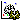 ). In this case we do not change the command line options for these programs in the dialogs. It should take about 2-3 seconds for these programs to run for this particular alignment.
Alternatively, we could also load the pre-calculated results of these programs (files examples/PF00202.S3det and examples/PF00202.Xdet) by draging these file into JDet's main window (which already contains the alignment) or with "File -> Load method result ->" or the corresponding buttons (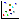 ). Note that if you drag the files these should have the right extensions (.S3det and .Xdet) in order for the program to known which method is being loaded.
The main window is updated with he results of these programs (Figure 2).
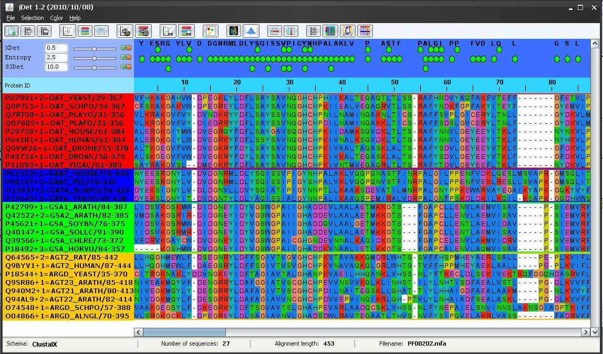Xdet is loaded as two methods (Xdet and Entropy -a measure of conservation-) since the results file of that program contains both data.
The results file of S3det contains not only the SDPs but the detected subfamilies as well. The background of the protein IDs is colored according with their subfamily assignment. In this case, S3det finds 4 subfamilies (red, blue, green and yellow). It can be seen that these subfamilies automatically detected by S3det (using only sequence information) are in good agreement with the functional subfamilies as inferred from the protein IDs (see above). The only apparent disagreement is that the functional subfamilies AG* and AR* are reported as a single subfamily by S3det (yellow subfamily).
The top panel highlights (with green balls) the positions (columns of the MSA) reported by these methods as functionally important according with the default score threshold (panel on the left -Figure 3-). Changing this threshold with the scrollbars (or typing new values in the boxes) changes the set of highlighted positions.
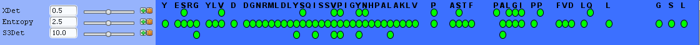Before starting to analyze the predicted SDPs, we are going to incorporate available structure information for this family in order to better understand the role of the SDPs. For that we load and visualize the 3D structure of one of the proteins of the alignment.
In this case, we are going to load the 3D structure of the human ornitine-aminotransferase (P04181-OAT_HUMAN in our alignment). We do that with "File->Load structure (PDB)" or with the corresponding button (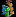). In the "Alignment sequence" section of the dialog we select "P04181-OAT_HUMAN" and press the "Look for suitable structure for" button besides it (Figure 4). The program detects that a suitable structure is that of chain A in PDB code 2OAT (the scores of the BLAST hit appear in the "Status" line) and the PDB code and the chain are inserted into the corresponding text-boxes of the dialog (Figure 4). Once the suitable PDB was found, press "Load from server" to retrieve that estructure from the RCSB site (this requires an active internet connection). Wait until "Download complete" appears in the "Status" line. You could also force the program to use other PDB/chain or load a local PDB file (check the user manual). If you want to try, or you are not connected to the Internet, a local copy of this PDB file is in examples/1oat.pdb
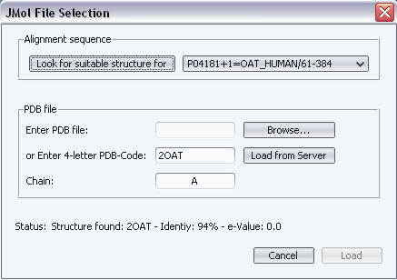Once the suitable structure was detected and retrieved, press "Load" to load it into JDet. A window with information on the alignment between the sequence in the PDB file and the sequence in the alignment appears. After checking that the alignment is Ok, we press "Accept" and the 3D structure shows up (Figure 5). Note that the two sequences (that in the PDB and that in the alignment) do not have to be 100% identical: for example, if one of the sequences is a fragment, or if the structure of the protein is not available and that of a close homolog is used.
The structure of the chain we are interested in ("A" in this case) is highlighted in ribbon, while the other chains in the crystal are shown in backbone. Small molecules (ligands, substrates, cofactors, ...) are highlighted in yellow and spacefill (Figure 5). In the alignment window, the ID of the corresponding sequence is highlighted in black.
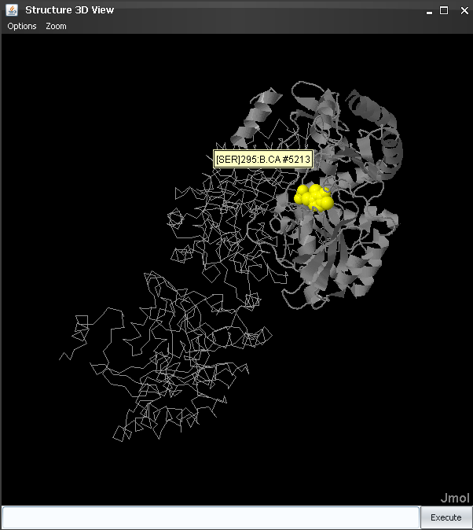To inspect the structural characteristics of the residues predicted by S3Det in the 3D structure, we click the button besides the method's name in order to select all positions reported by that method (according with the selected threshold). These positions are highlighted in the alignment window and the corresponding residues in the 3D structure are changed to green color and sticks representation (Figure 6). We can change the representation of the residues to "spacefill" in the 3D structure (in order to emphasize them) by entering spacefill in Jmol´s text box. Remember that commands typed there affect the last selection.
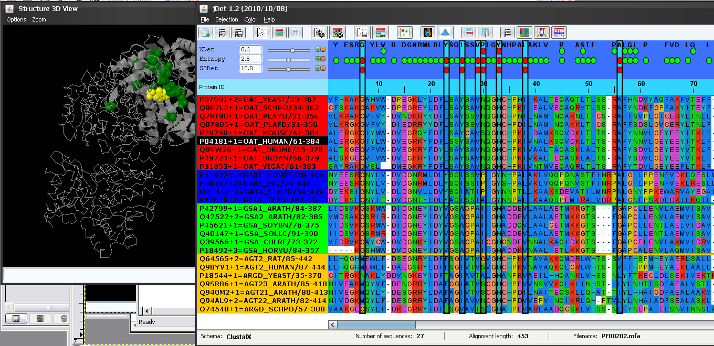It can be seen that most of these SDPs are around the active site of this protein (as inferred by the presence of the bound PLP cofactor -yellow-) and in the binding surface with the other chain. So it is feasible that these positions are actually responsible for controlling the substrate specificity in this family. Actually, two of these positions (85 and 235 in PDB 2OAT; 26 and 284 in this alignment) have been reported in the literature as capable of modifying the substrate specificity, by single mutant experiments (Markova, et al. (2008). J Biol Chem.280:36409). To inspect in more detail these two positions we can enter select 85:A,235A in Jmol's window, then color red and center 235:A Finally we zoom-in with the mouse middle button (Figure 7).
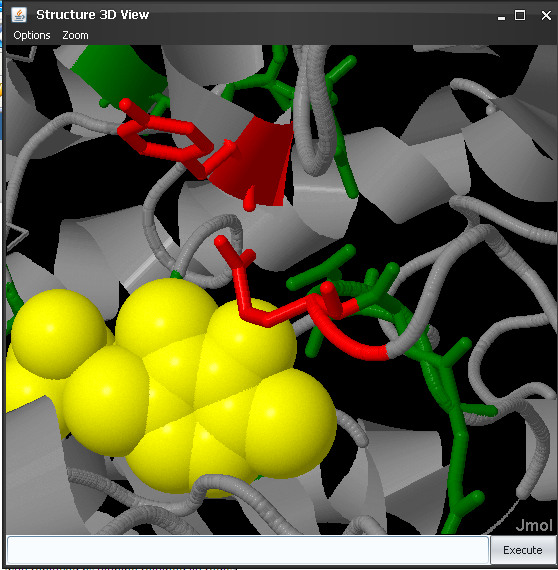These two positions (Tyr and Glu in human ornitine-aminotransferase) are very close to the PLP cofactor and they control its position and orientation, as well as those of the substrate (see the reference above for more details).
To better understand how these and other SDPs could control the functionally specificity by changing the aminoacid type from one subfamily to another we inspect in detail the sequence composition of these SDPs as well as the corresponding sequence logos. Making sure that these positions reported by S3Det are still selected (see above) we go to "Selected->Show selection" and "Selection->Subfamily logo", or the 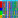 and buttons in the bar. A subalignment composed by these positions only, and the corresponding sequence logos show up (Figure 8). The intra-family conservation pattern of these positions is evident now. It can be seen that these positions tend to be highly conserved within each subfamily and the aminoacid type differs from one to the other, which could explain the change in specificity. The involvement of residue 235 (position 284 in the alignment) in determining specificity could be related to the strong change in charge (from negative E in most subfamilies to positive N in the glutamate-semialdehide-ATs subfamily) (Figure 8). For residue 85 (pos. 26 in the alignment) the aminoacid change is not so evident with this color schema of the aminoacids (all aminoacids in this position appear as blue -hydrophobic-). We change the color schema to "Molecular weight" in the "Color" menu and regenerate the subalignment and logos (in some operative systems re-activating these windows (bringing them to the front) will be enough for the new color schema to show up). Now it is more evident that the molecular property which changes in this position is the molecular weight (from large aminoacids (W and Y) to small ones (L and V)) (Figure 9).
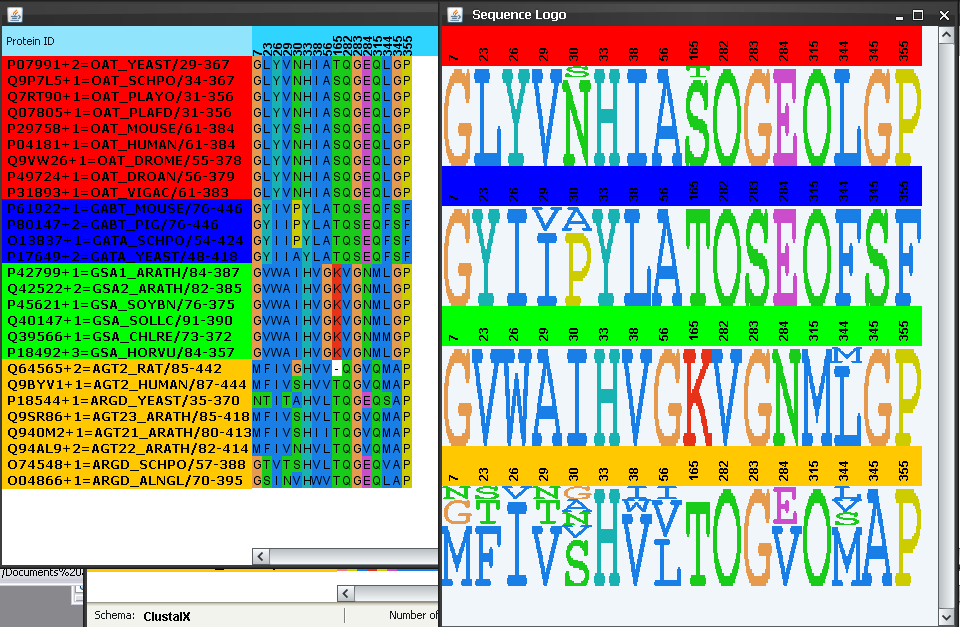 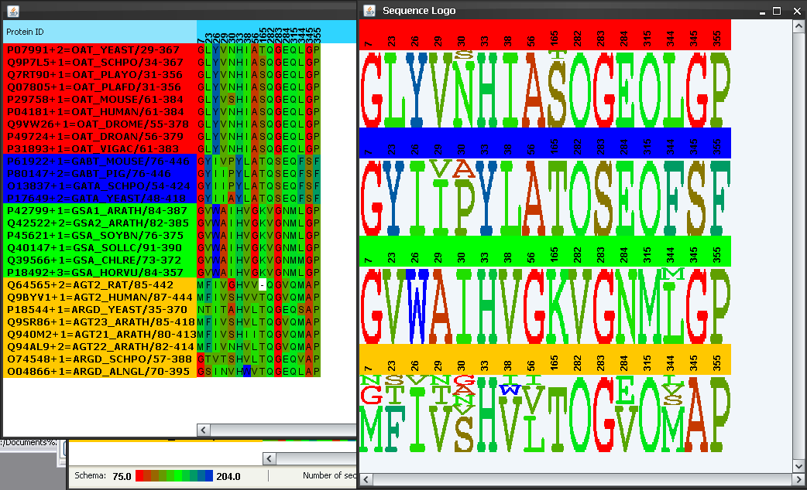Now we are going to inspect the characteristics of the sequence and residue "spaces" which define this family of proteins. We do that with "File->Show sequence spaces" or with the button in the toolbar. In the "protein space" (left), we can see how the proteins cluster in distinct regions of the space defining the different subfamilies. We saw above how the yellow subfamily reported by S3Det actually comprised two functional subfamilies (AG* and AR*). In this "protein space" it is clear the the yellow cluster is actually composed of two sub-clusters. We select the yellow sub-cluster closer to the center of coordinates (by dragging with the mouse while pressing SHIFT). The points of these sub-cluster change to black and the IDs of the corresponding proteins in the alignment to grey (Figure 10). It can be seen that this sub-cluster corresponds to the AR* functional subfamily (and hence the other sub-cluster to the AG*) (Figure 10). Sometimes the fixed threshold used by S3Det to decide whether to subdivide further a cluster or not is not enough to automatically pick up the "biological" subfamilies and, for that reason, visually inspecting the original space can provide more insight into the structure of the family.
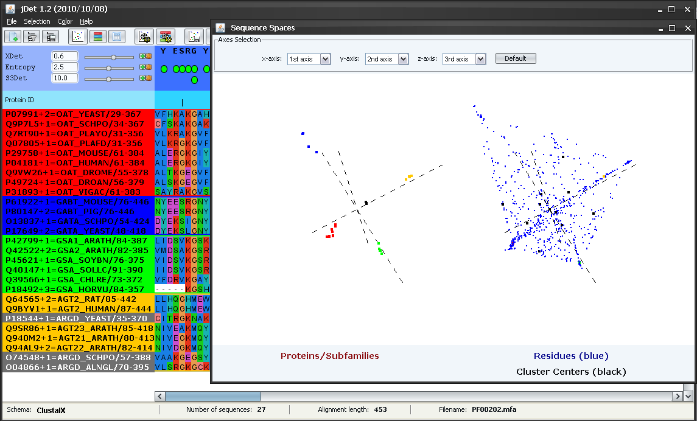All the operations performed above with the subfamilies automatically detected by S3Det assumed that the yellow subfamily was functionally homogeneous. Nevertheless, at some points it was evident that there was some degree of "inhomogeneity" in it. For example in the sequence logos in Figures 8 and 9 that family showed the highest level of variability, reflecting the presence of more than one aminoacid type in the positions.
The sequence-space window can be used, among other things, to perform some operations with other subfamily partitions not found by S3det automatically. For example imagine we are interested in locating positions which act as SDP for the AR* subfamily (i.e. differentially conserved on it). Let's start by making sure that the "cloud" of points defining this (sub)subfamily is still selected (as in Figure 10) and that there are no positions selected (if there are, press the button to unselect them). The first step is to look for a 3D projection of the multidimensional space where this subfamily is clearly differentiated and where the corresponding residues in the residue space can be unambiguously picked up. In this case, we select the principal axis 2nd, 3rd and 4th (Figure 11). It can be seen how this (sub)subfamily (black dots) is clearly differentiated with this combination of axis. We then select the residues "associated" with this subfamily (those that are in the same region of the space) by dragging the mouse while pressing SHIFT. The selected residues are highlighted in red in the residue space (Figure 11). These residues are also marked in the alignment window (and the protein structure if available). It can be seen that many or these positions are indeed conserved within the AR* subfamily and the aminoacid type is different from other aminotransferases, including AG* (e.g. Thr-23, Thr-29, Asn-55, etc.)
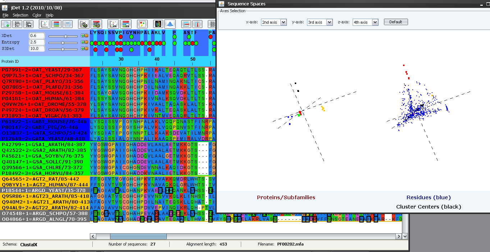